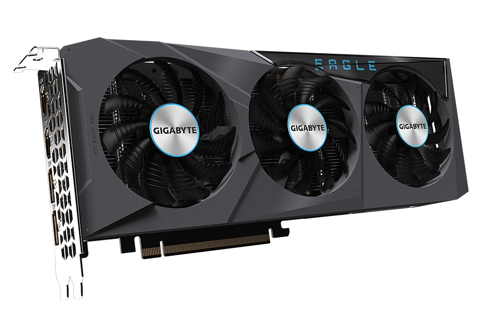
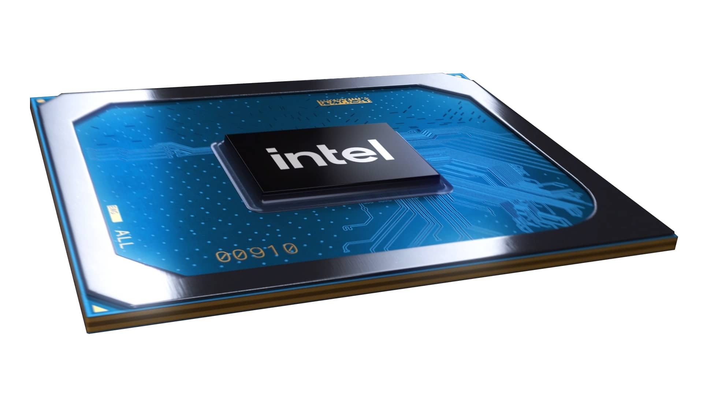
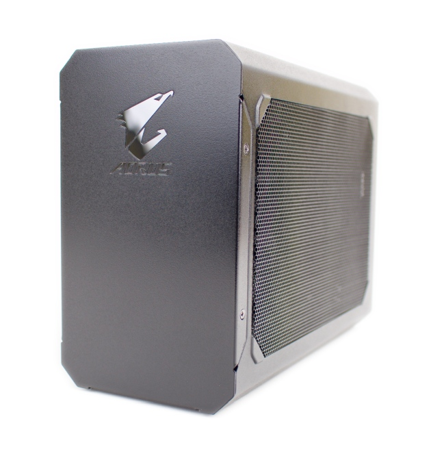
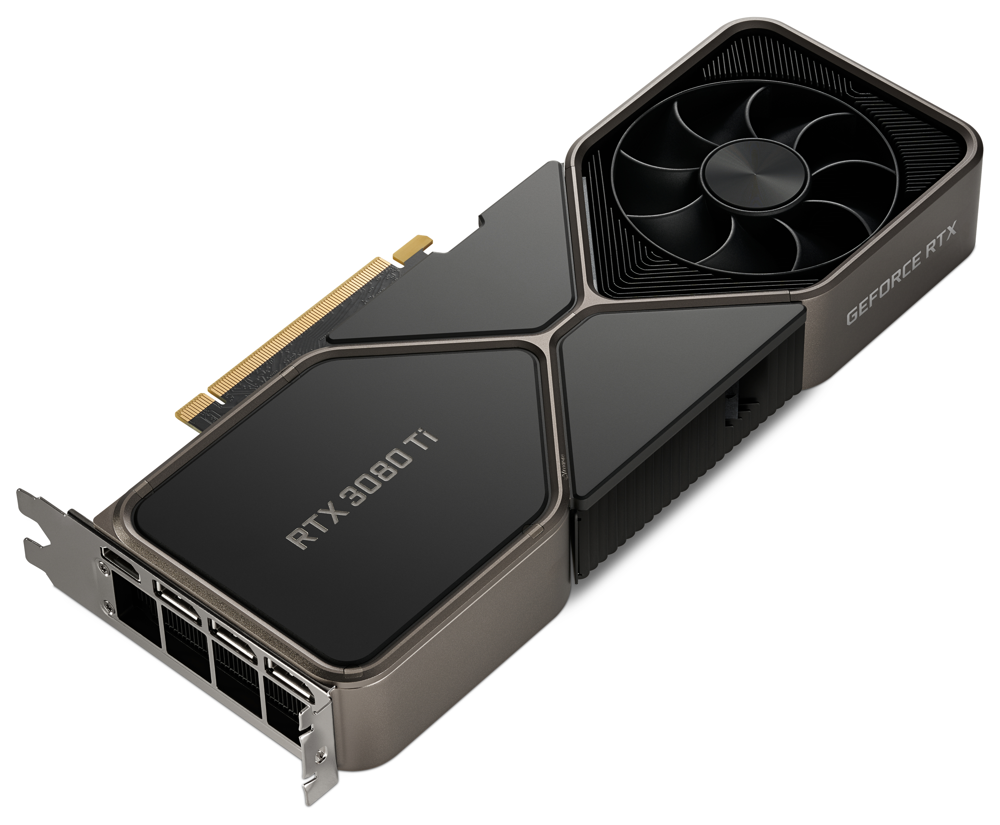
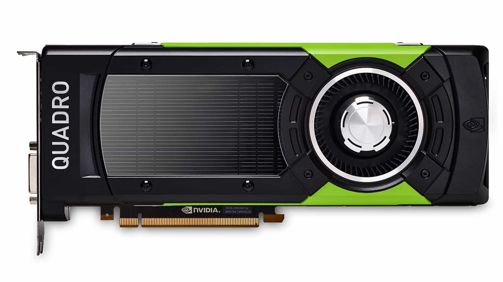
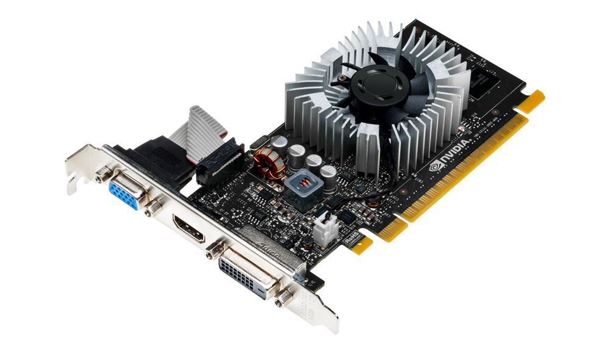

Grafická karta
Jak funguje a k čemu slouží grafická karta?
Základním principem grafické karty je vytváření statických snímků a jejich rychlé střídání za sebou. Podobně jako u animace se ze série snímků stane iluze pohybu. Kolik takových snímků se za sekundu vystřídá, udává hodnota FPS, která je známá i mnoha laikům. V případě sledování videí je počet snímků konstantní. Na druhé straně při hraní her můžete získat tolik FPS, kolik je váš hardware schopný vyplodit. Tato cifra ovšem nezávisí pouze na grafické kartě, ale i na dalších komponentech, primárně pak na procesoru.  Grafické karty toho dnes zvládnou mnohem víc než jen zobrazovat počítačové hry – grafické čipy se totiž postarají o plynulé přehrávání 4K videa, umí citelně akcelerovat kódování videa, rychle vypočítat složité matematické operace a pochopitelně dovedou v reálném čase vytvářet detailní 3D scény. Ve všech těchto oblastech navíc nastal v posledních letech ohromný posun. Výkon současných generací grafických karet od AMD a NVIDA je ve srovnání s 5 let starou kartou ohromující. Například mezigenerační nárůst výkonu v případě aktuální řady NVIDIA GeForce RTX 30 je přibližně 40 % vůči GeForce RTX 20 za pouhé dva roky vývoje.
Základní rozdělení grafických karet podle provedení
Kdo by si ještě před několika lety pomyslel, že bude možné k tenkému notebooku jednoduše pořídit výkonnou grafickou kartu. Vývoj jde neuvěřitelným tempem dopředu a k typickým grafickým kartám přibyly i externí boxy. Jaké jsou výhody a nevýhody jednotlivých řešení?
Interní grafické karty
Interní grafické karty představují variantu, která se odhadem používá u 99 % případů. U stolních PC jde o fyzickou kartu, která se zasouvá do PCIe ×16 slotu na základní desce. Taková karta v případě herního modelu váží klidně 750 gramů při délce 300 mm. Jde tak o masivní kus železa, který tvoří po chladiči procesorů druhý bod, kterého si okamžitě všimnete při pohledu do otevřené skříně.  U notebooků pak jde z pochopitelných důvodů výhradně o čipy integrované přímo na základní desce. To platí v případě výkonných GPU. Nicméně tu máme i grafiky integrované do jednoho velkého čipu společně s CPU. I když v této oblasti zaznamenáváme u nových procesorů velký posun, přesto jde spíše o kompromisní řešení pro méně náročné hráče.
Externí grafické karty
Externí grafické karty představují zajímavou alternativu z posledních let, kterou přineslo moderní rozhraní Thunderbolt 3 reprezentované konektorem USB-C. V zásadě jde o externí box se slotem pro rozhraní Thunderbolt 3 je však naprosto klíčová věc. V podstatě každý nový notebook již má konektor typu USB-C, ale poměrné malé procento z nich podporuje Thunderbolt 3. Toto je nutné vždy dopředu prověřit v grafickou kartu. V případě některých variant lze takovou grafickou kartu časem vyměnit podobně jako v PC. Nicméně některé boxy jsou od výrobce již napevno spojené s danou grafickou kartou. Takový externí box s grafickou kartou pak jednoduše udělá z kancelářského notebooku silnou herní mašinu. Již zmíněné podrobných specifikacích na stránkách výrobce notebooku.
Dedikované grafické karty
Dedikovaná grafická karta je rozšiřující modul pro počítače nebo notebooky. V případě stolních PC jde o často fyzicky poměrně velkou kartu, která se vkládá do volného PCI Express ×16 slotu na základní desce. V případě notebooků je dedikovaná grafická karta umístěna do speciálního čipu, který je nedílnou součástí základní desky. A co je vlastně základním principem fungování grafické karty? V zásadě jde o postupné vytváření série statických snímků a jejich rychlé střídání za sebou. Podobně jako u animace se následně z takové série snímků stane iluze pohybu. Kolik takových snímků se za sekundu vystřídá, udává hodnota FPS, která je známá i mnoha laikům zejména z testů a recenzí herních grafických karet. Výsledná snímková frekvence však samozřejmě závisí i na dalších komponentech v PC, zejména pak na procesoru.
Herní grafické karty
Herní grafické karty jsou nejžádanějším typem. Low-endové modely seženete i za pár tisíc, za opravdovou špičku však můžete zaplatit i desítky tisíc. Disponují ale promyšleným chlazením a vysokým výkonem.
Profesionální grafické karty
Přemýšlíte nad pořízením velmi výkonné profesionální grafické karty, která si hravě poradí i s náročnými 3D programy, editací videí nebo CAD softwary? Úplně zapomeňte na herní grafiky NVIDIA GeForce, ale zaměřte se na úzce specializovanou řadu NVIDIA Quadro. Díky vysoké kapacitě pamětí a široké datové propustnosti jde o řešení vhodné pro náročnější uživatele. Díky famóznímu výkonu CUDA jader ušetříte například při výpočtech nebo renderování 3D scény mnoho času. Během stejné pracovní doby tak zvládnete odevzdat mnohem více práce. Své řešení pro použití v profesionální sféře má i společnost AMD. Konkrétně jde o grafiky AMD FirePro. Hlavní výhoda těchto karet spočívá především v certifikovaných ovladačích pro různý 3D software. Jde například o již zmíněné CAD programy, ve kterých lze pomocí složitých optimalizací na přesně dané výpočty dosáhnout násobně vyššího výkonu oproti běžným Radeonům.
Kancelářské a multimediální grafické karty
Potřebujete v kanceláři používat například dva nebo tři monitory, které razantně zvětší pracovní plochu a navýší pracovní produktivitu? V tom případě lze využít tzv. kancelářskou grafickou kartu. Ta sice nemá herní výkon, ale právě umí obsloužit dva nebo tři monitory i hardwarově akcelerovat přehrávané video.
